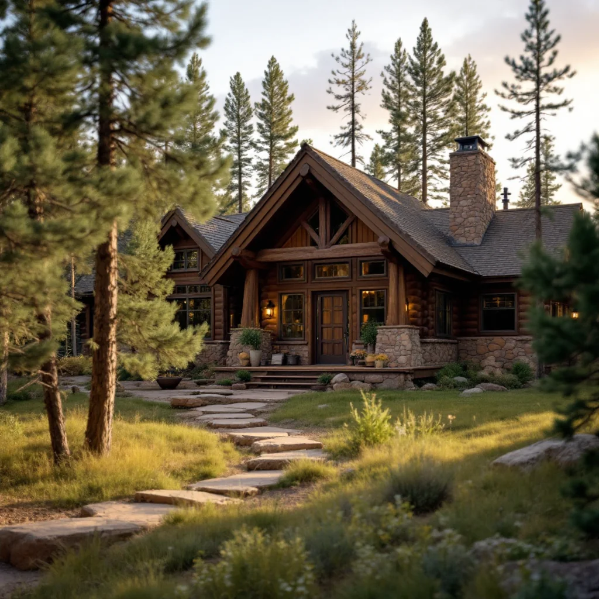

Found Mold? Here's What You Need to Know First.
At 8,465 feet, Woodland Park has a mold environment distinct from the Front Range communities below. Heavier annual snowpack, longer melt seasons, dramatic day-to-night temperature swings, and forest coverage combine to create persistent moisture conditions that affect even well-built homes. Many properties in the area are older cabin-style construction with natural wood throughout — materials that absorb moisture and sustain mold growth in ways that modern construction doesn't.
The mold problem is solvable. The key is accurate inspection — finding all the moisture and all the affected areas before committing to a price — and proper containment to prevent spreading spores during removal. We serve the Woodland Park area and follow the same certified protocols on every job regardless of location.
What Makes Woodland Park Different for Mold
Substantial snowpack and extended melt seasons. Woodland Park receives significantly more snow than Colorado Springs and it persists well into spring. Weeks of snowmelt means sustained water pressure against foundations and around perimeters — this is how moisture infiltration happens in homes that might otherwise be fine during normal precipitation.
Large day-to-night temperature swings drive condensation. At this elevation, a 40°F difference between afternoon high and overnight low is common, especially in spring and fall. This daily condensation cycle deposits moisture on cool surfaces inside walls and attics — repeated hundreds of times per year, this is a primary cause of structural mold growth in mountain homes.
Natural wood construction absorbs moisture. Cabin-style construction common in the Woodland Park area uses exposed wood elements — log walls, rough-sawn beams, board-and-batten — that absorb humidity and hold moisture against the surface. When drainage or vapor management fails, these materials create the ideal substrate for mold.
Vacation and part-time homes go unmonitored. Properties used seasonally may go months without the humidity and moisture checks that permanent residents would notice. Mold in unoccupied homes grows without anyone to detect the early signs — musty odors, condensation, early surface growth.
How We Handle Mold Remediation Near Woodland Park
- Free Inspection: Full assessment with moisture meters and visual documentation. We check attics, crawl spaces, and structural wood elements common in mountain construction. Written scope and price before work starts.
- Containment: Plastic sheeting and negative air pressure isolate the work area from living spaces and HVAC.
- Remove and Treat: Contaminated materials removed where necessary. Structural wood is HEPA-vacuumed and treated — borate treatments are available for penetrating wood to inhibit future growth.
- Moisture Source Addressed: Foundation drainage, vapor barriers, roof penetrations, or ventilation deficiencies identified and corrected or clearly scoped.
- HEPA Air Scrubbing: Air scrubbers run in containment before opening to the rest of the home.
- Clearance Testing: Independent air sampling confirms spore counts are normal. Written documentation provided.
What Woodland Park Homeowners Are Saying
"Mountain cabin with a crawl space that hadn't been inspected since we bought it. Significant mold on the floor joists — probably there for years. Full remediation, new vapor barrier, borate treatment on the joists. Problem solved."
— Bill and Karen M., Woodland Park"Part-time vacation home. Came up in May and the basement smelled terrible. Mold all over one wall from a pipe that had been dripping slowly all winter. They were there within two days, fixed it, clearance test passed."
— Dennis F., Woodland ParkWhat Does Mold Remediation Cost Near Woodland Park?
Small area (under 10 sq ft): $500–$1,500
Mid-size (10–100 sq ft): $1,500–$4,000
Large / whole-room or structural: $4,000–$9,000
Post-remediation clearance testing: $300–$500
Travel to Woodland Park may add a nominal trip charge depending on job size — we'll confirm on the first call. The free inspection still applies.
Quick Answers Before You Call
Do you travel up to Woodland Park for inspections?
Yes. We serve the Woodland Park area via the Ute Pass corridor. Call us and we'll confirm availability and any travel charge depending on job size. The inspection itself is always free.
My home is only used part of the year. How do I prevent mold while it's vacant?
Maintain minimum heat (above 55°F), ensure exhaust fans are operational, and have the crawl space and basement inspected annually. Dehumidifiers with auto-drain help during the warmer months. A pre-season inspection is inexpensive compared to the remediation cost when problems go undetected through a whole winter.
Is borate treatment effective for mountain home wood?
Yes. Borate treatments penetrate into wood grain and inhibit future mold and insect activity. We use it on structural wood that can't be removed — joists, beams, subfloor — as part of the remediation process. It's a standard part of our crawl space and attic work in mountain construction.
Mold Doesn't Pause. Neither Should You.
Free inspection. Written estimate. No obligation. We answer or call back within 1 hour.
📞 (719) 496-8287